PeopleSoft Event Listener Orchestration Setup Guide
Jump to
Overview
Prerequisite
Setting Up the Orchestration
Configuration
Attributes Mapping
Tables
Event Detail
Event Publishing Setup in PeopleSoft
Incremental Reconciliation
Configuring PeopleSoft Integration Broker
Conclusion
Overview
Orchestration is the automated configuration, management, and coordination of applications and services. PeopleSoft Listener Sync orchestration synchronizes XML Messages from PeopleSoft to any SCIM (System for Cross-domain Identity Management) destination. The orchestration takes place between the PeopleSoft application, which is the source, and the SCIM-based target application.
This guide explains the configurations to be done in the Aquera Admin portal to set up the orchestration for capturing the events triggered in the PeopleSoft application and synchronizing those changes in a target application.
Prerequisite
- Make sure that you have set up the source application (PeopleSoft) connector and the target application in the Applications module in Aquera Admin portal. Refer to the PeopleSoft Connector Configuration Guide for details.
Setting Up the Orchestration
To configure the PeopleSoft Listener Sync orchestration, perform the following:
-
On the Aquera Admin Home page, navigate to the Orchestrations module and click Create Orchestration.
- Enter the following details on the Add Orchestration pop-up window:
- Enter a Name for the orchestration.
- Select Peoplesoft Event Listener from the orchestration type drop-down list.
- Click Done.
Configuration
- Select PeopleSoft as your Source Application and the required destination application as the Target Application (for example, BambooHR).
- Select Report Only to get a report that shows what would be changed after the orchestration run without actually making the changes.
- If you want to send the orchestration's outcome to a specific set of users, the email IDs of those users can be provided in the Admin Email List field.
- Enter the Match Expression to determine the target record that matches a given source record. The match expression can be provided only if the target connector supports GET operation.
- Select Map Manager to map users' managers from source to target. The manager attributes in the user objects are used for mapping.
- Click Create to create the orchestration
Orchestration Hooks
This section details the configurations to set up the following Orchestration hooks. The Hooks settings are optional.
- New User Orchestration Hook - Select an orchestration that has to be executed when a user is created in the target application. The selected orchestration will be triggered during user creation.
- Update User Orchestration Hook - Select an orchestration that has to be executed when a user is updated in the target application. The selected orchestration will be triggered during the user update.
- Deprovision User Orchestration Hook - Select an orchestration that has to be executed when a user is de-provisioned in the target application. The selected orchestration will be triggered during user deprovisioning.
Creation Email Details
Clicking Send New User's Manager Email causes an email to be sent to a new user's manager.
In the Creation Distribution List, users can create a comma-separated list of recipients who will receive an email when the orchestration creates a new target.
Creation Email Subject can be used when sending creation email reports.
Creation Email Body is a template used as the body for creation emails. (Target attributes may be included). 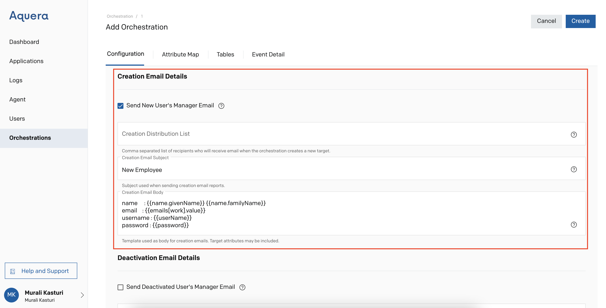
Deactivation Email Details
Clicking Send Deactivated User's Manager Email causes an email to be sent to a deactivated user's manager.
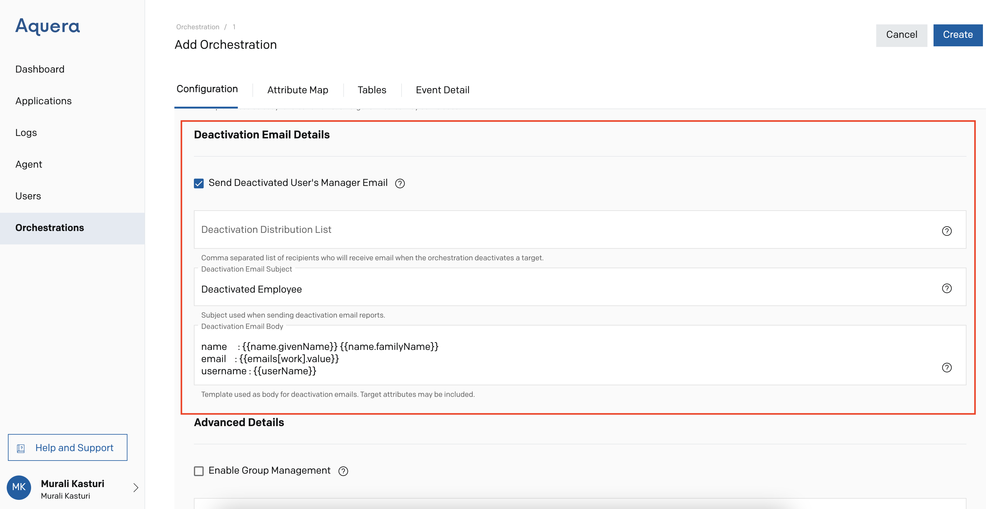
Advanced Details
Enable Group Management can be selected to enable group management.
When Group Management Restriction List is specified, group management is limited to the set of comma-separated groups. When not specified, Enable Group Management applies to all groups.
Phone Number Formatting can be chosen as one of the following: "disabled", "automatic", "E164", "INTERNATIONAL", or "NATIONAL[,country=US], where ",country=US" is optional and "US" can be replaced with other countries.
Password Length is the length of the password generated when creating new users.
Report Logging is set as normal by default. This feature controls the amount of detail that will be provided in the report. Users need to start with normal, and increase (verbose) or decrease (minimal) as desired. 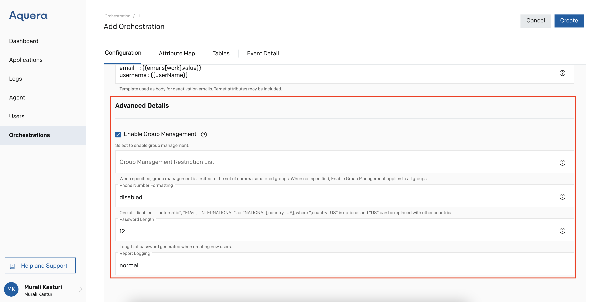
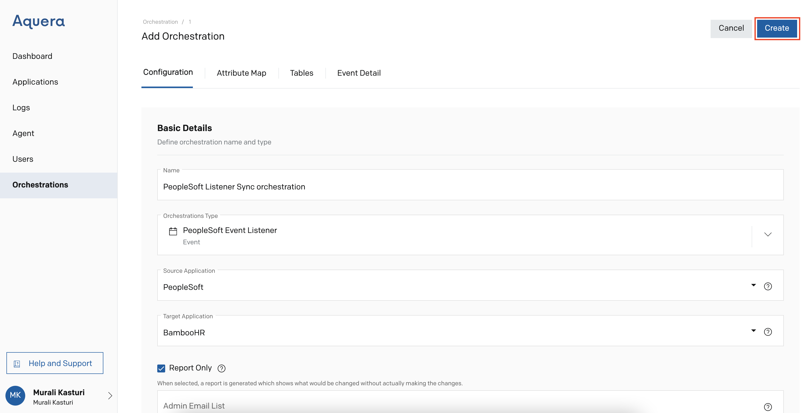
Attributes Mapping
In the Attribute Map section, attributes that are commonly placed at the Source and the Target will be matched automatically. Users can filter the attributes to be mapped further by using the Attribute Filter located on the top right. They can choose either one or two or all of the three types of Core, Enterprise, and IAN attributes based on the Target application's requirement.
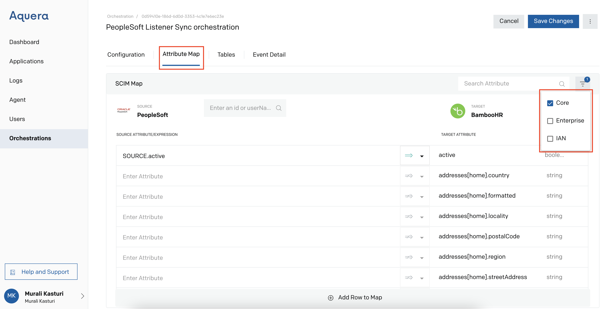
If the users want to map a specific attribute, they can search it by name in the Search Box
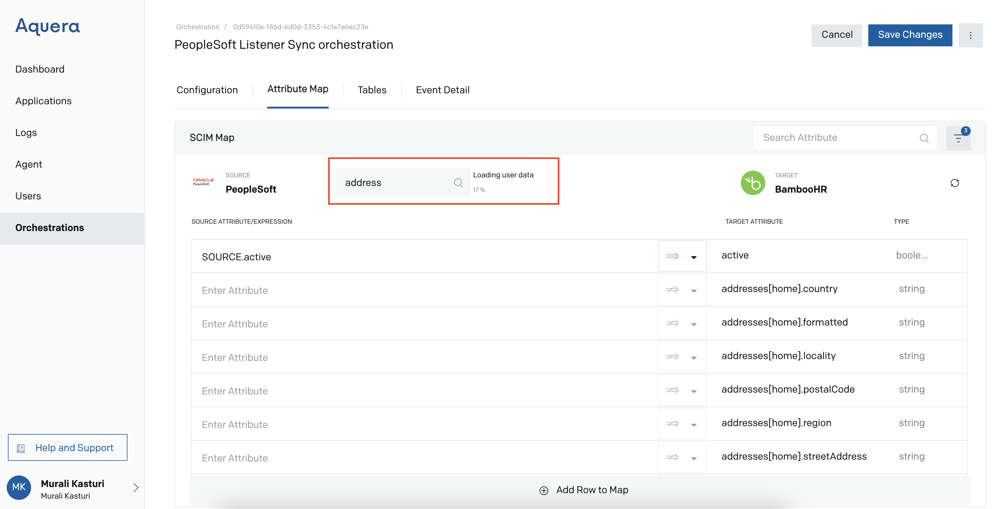
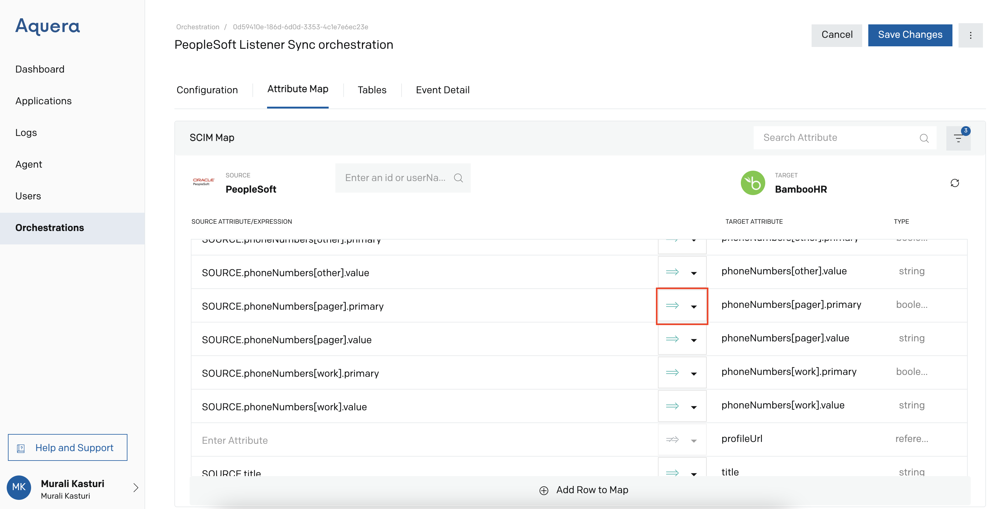
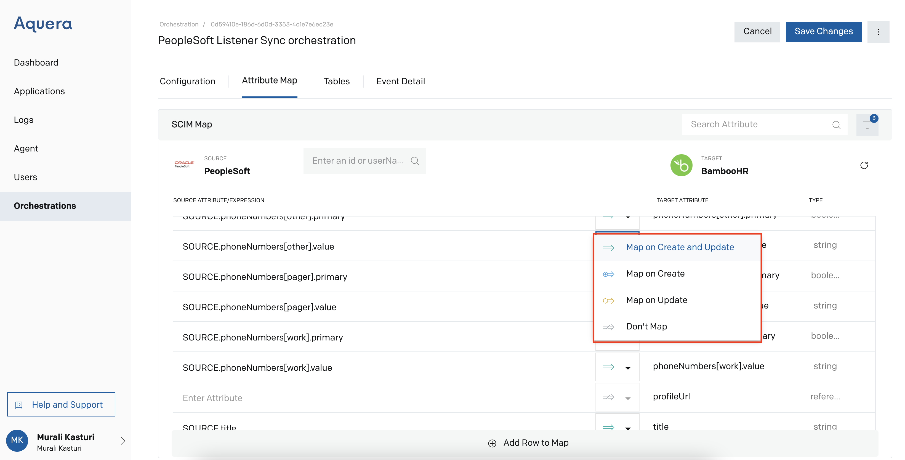
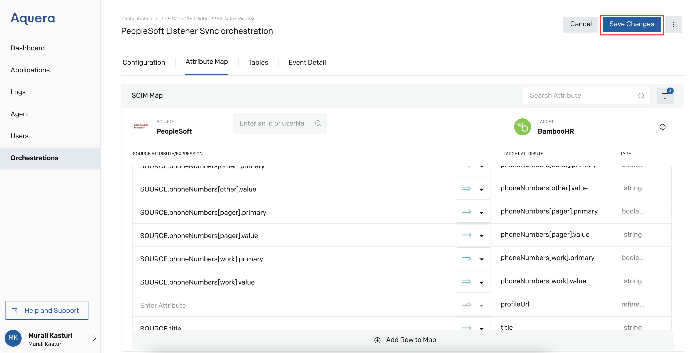
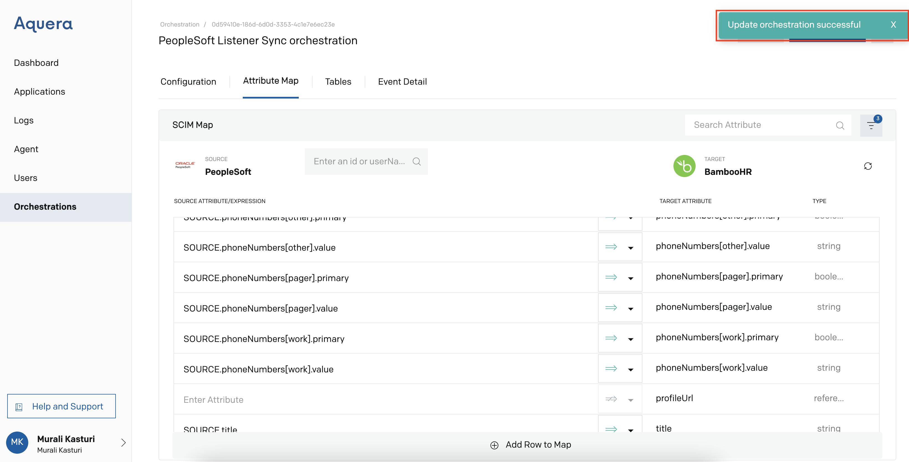
Tables
Users can create a new table/tables by clicking Add New Table in the Tables section 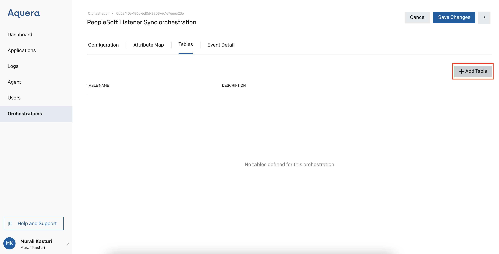
To upload the table in the file format, provide a Name and Description and click Upload CSV File. The orchestration supports only .csv file format and the file should have only two columns - Name and Value.
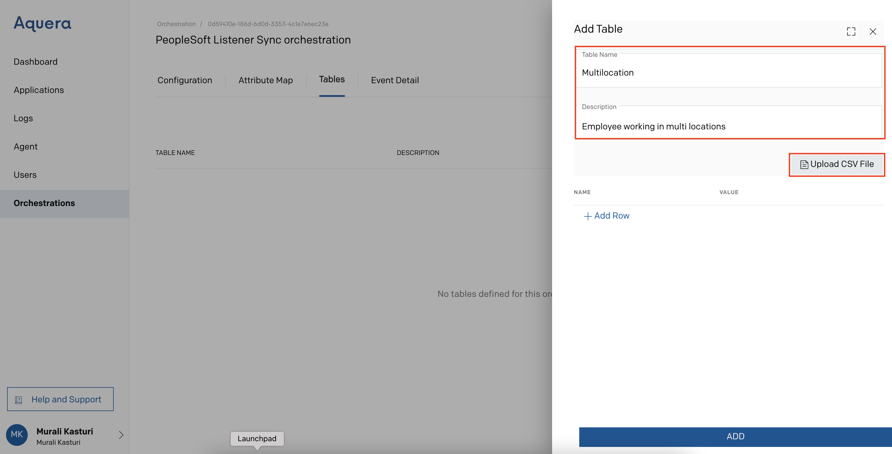
Portions of this data can be deleted. To delete the data, click the Delete icon on the relevant row
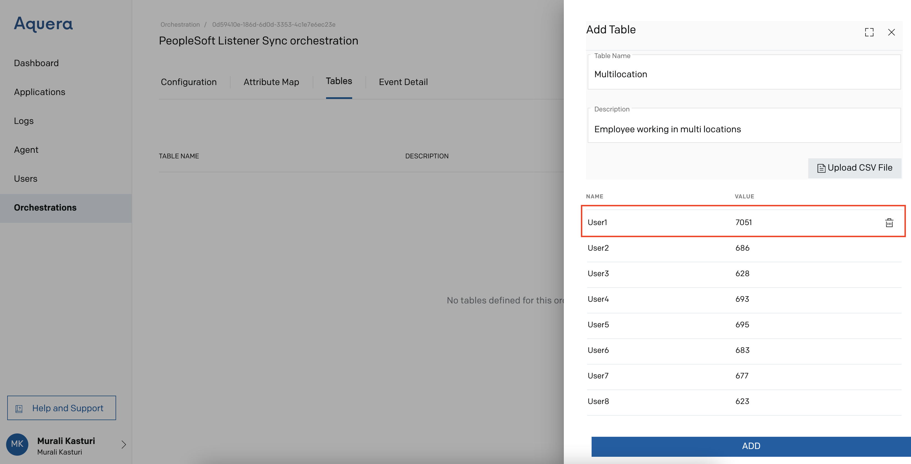
After verifying the data, click Add to add the table to the orchestration. 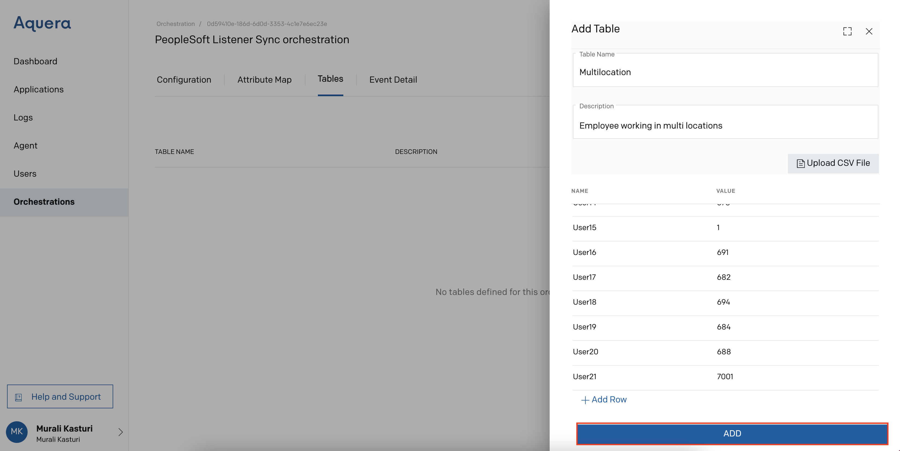
Users can add any number of Tables, based on the requirement.
Event Detail
Events can be enabled for source applications that support asynchronous notification of specific data changes. When a user update or create event happens in PeopleSoft, the corresponding event is sent as an XML message to the Aquera orchestration service and the orchestration updates the change in the target application.
- Click the Event Detail tab and copy the URL.
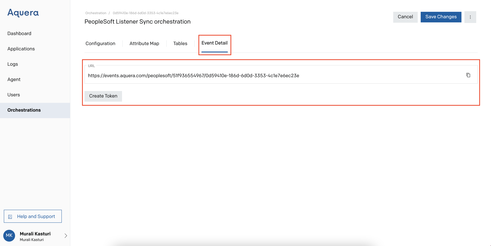
This URL is the location of the Aquera service to which the XML messages sent from PeopleSoft will be posted. The copied URL must be pasted into PeopleSoft when you configure the PeopleSoft Integration Broker. For details, refer to the Configuring PeopleSoft Integration Broker section. - Click Create Token. A token is generated.
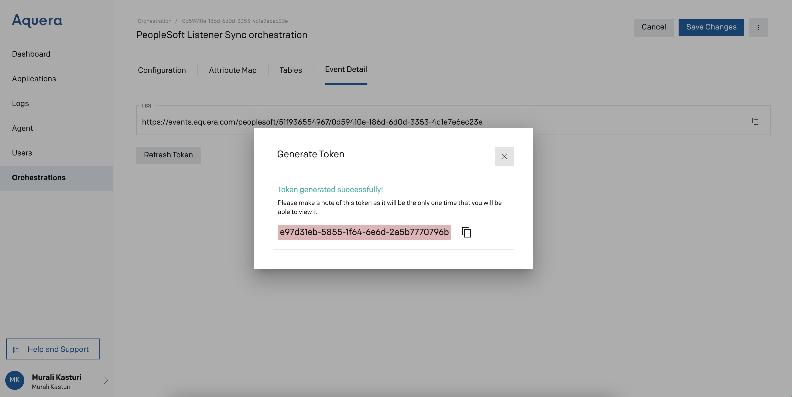
- Copy the token.
- Paste this token at the source application (PeopleSoft) and save the changes.
Event Publishing Setup in PeopleSoft
Incremental Reconciliation
The incremental reconciliation is achieved through the PeopleSoft standard messages, such as USER_PROFILE and DELETE_USER_PROFILE. These standard messages are used to synchronize user profiles with other applications.
The USER_PROFILE message contains information about user accounts that are created or modified. The DELETE_USER_PROFILE message contains information about user accounts that are deleted.
Fetching all the records present in PeopleSoft is implemented by running the USER_PROFILE message. When a user profile is updated in PeopleSoft, the USER_PROFILE message is triggered. Similarly, when a user profile is deleted in PeopleSoft, the DELETE_USER_PROFILE message is triggered from PeopleSoft to delete the corresponding provisioned resource in the target application. The DELETE_USER_PROFILE is supported through incremental reconciliation.
Incremental reconciliation is performed using PeopleSoft application messaging.
Configuring PeopleSoft Integration Broker
The PeopleSoft Integration Broker is a messaging system, which is deployed on the PeopleSoft Web server. It is the physical hub between PeopleSoft and any third-party system. It provides a mechanism for communicating with the outside world using XML files.
You must configure Integration Broker as follows to send and receive messages from and to PeopleSoft.
Create a remote node by performing the following steps:
-
In the PeopleSoft Internet Architecture window:
- For PeopleTools 8.54 and earlier releases, expand PeopleTools, Integration Broker, Integration Setup, and then click Nodes.
- For PeopleTools 8.55 and 8.56, click NavBar, Navigator, PeopleTools, Integration Broker, Integration Setup, and then click Nodes.
- On the Add a New Value tab, enter the node name, for example, AQUERA_NODE, and then click Add.
- On the Node Definition tab, enter a description for the node in the Description field. In addition, enter PS in the Default User ID field.
- Make this node a remote node by deselecting the Local Node check box and selecting the Active Node check box.
- Make the Node Type as PIA.
-
On the Connectors tab, search for the following information by clicking the Lookup icon:
Gateway ID: LOCAL
Connector ID: HTTPTARGET -
In the Properties section under the Connectors tab, enter the following information:
- Property ID: HEADER
Property Name: sendUncompressed
Required: Enable
Value: Y - Property ID: HTTP PROPERTY
Property Name: Method
Required: Enable
Value: POST - Property ID: HEADER
Property Name: Location
Value: Enter the value of the IT resource name as configured for the target system.
Sample value: PSFT User - Property ID: PRIMARYURL
Property Name: URL
Required: Enable
Value: Enter the URL that is configured to receive XML messages from PeopleSoft. This must be the URL copied from the Event Detail tab in the Aquera Admin console. For details, refer to the Event Detail section. - Property ID: HEADER
Property Name: Authorization
Required: Enable
Value: Enter the token that is generated in the Event Detail tab in the Aquera Admin console. For details, refer to the Event Detail section.
Sample value: Bearer <token-value>
- Property ID: HEADER
- Navigate to the Routings tab and add the following definitions:
-
Name: PERSON BASIC SYNC AQUERA
Service Operation: PERSON_BASIC_SYNC
Service Operation Version: INTERNAL
OType: Asynch
Sender Node: PSFT_HR
Receiver Node: The name of the node. For example, AQUERA_NODE
Direction: Outbound -
Name: WORKFORCE SYNC AQUERA
Service Operation: WORKFORCE_SYNC
Service Operation Version: INTERNAL
OType: Asynch
Sender Node: PSFT_HR
Receiver Node: The name of the node. For example, AQUERA_NODE
Direction: Outbound
-
Name: PERSON BASIC SYNC AQUERA
- Click Save to save the changes.
Orchestration Logs
To see the orchestration logs in the Aquera Admin console, go to Logs, select Orchestrations and click on your orchestration name.
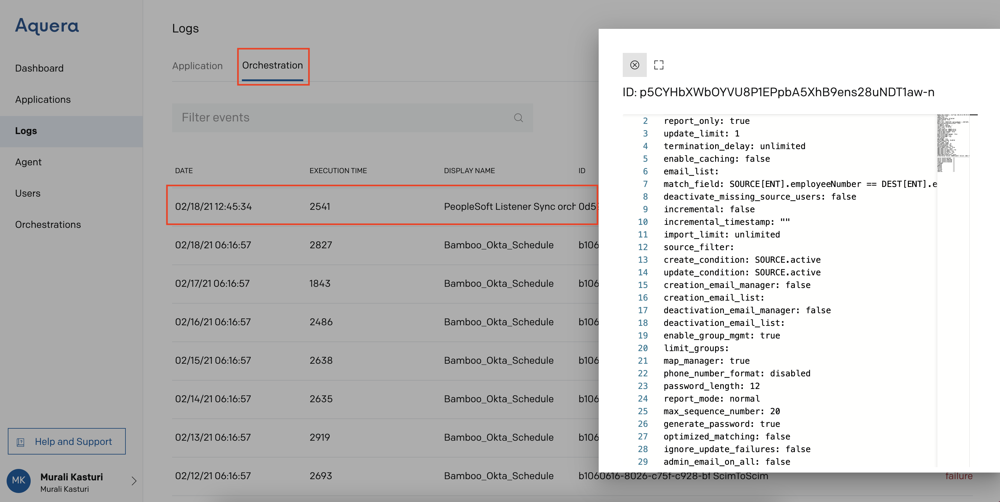
Conclusion
Data changes made to the source application will get reflected in the target application once the orchestration is executed. The updated data can be seen in the orchestration logs. Similarly, users can also log in to the target application and verify the updated users' data.